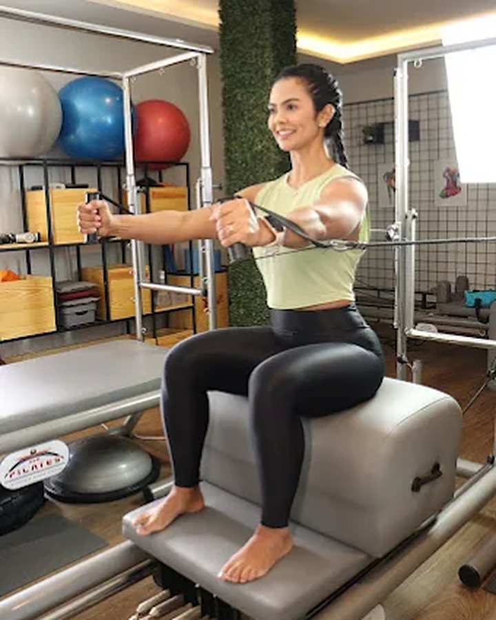
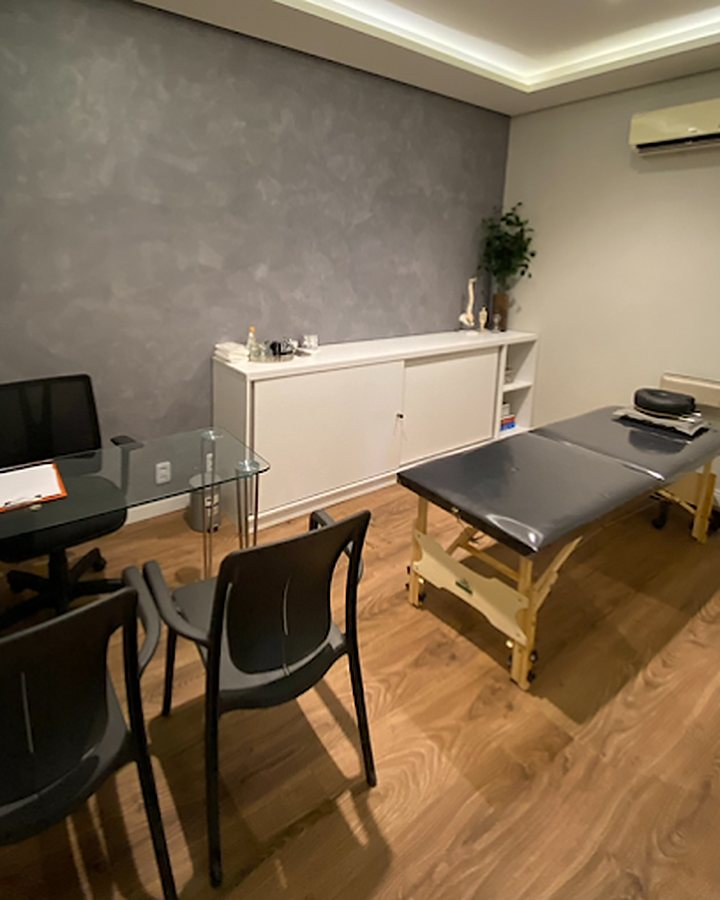
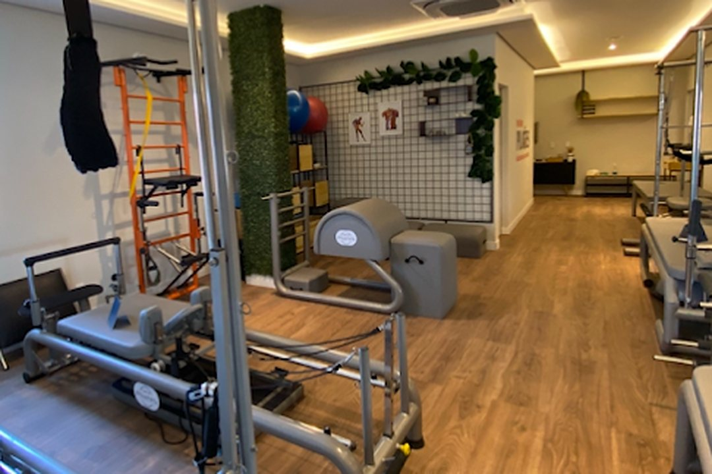
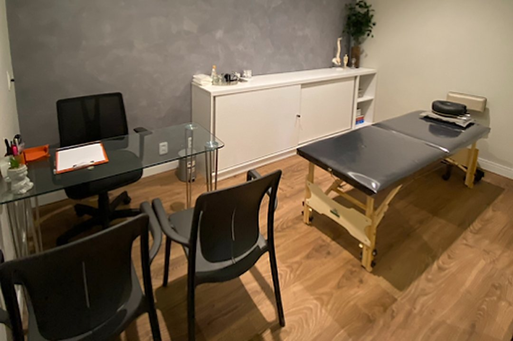

01
Fisioterapia
Para tratar dor, recuperar movimento depois de uma lesão ou cirurgia e voltar às atividades com segurança. O atendimento começa por entender a causa do problema.
Conhecer a fisioterapiaVocê passa por uma avaliação, entende o que está acontecendo com o seu corpo e segue um plano de tratamento feito para a sua rotina.
Escolha o que mais se parece com a sua situação. Se não encontrar, chame no WhatsApp e conte o que está sentindo.
A dor que volta depois de um dia inteiro sentado, ou que trava na hora de levantar da cama.
FisioterapiaDor para subir escada, agachar ou voltar a correr.
FisioterapiaRecuperar movimento e força, no tempo certo de cada fase.
ReabilitaçãoAcompanhar as mudanças do corpo durante a gravidez, com exercício e alívio das dores.
PilatesForça e equilíbrio para continuar fazendo as próprias coisas.
FisioterapiaTratar uma lesão e voltar ao treino de forma gradual.
FisioterapiaPescoço, ombros e costas sempre duros, com sensação de peso.
Terapias manuaisExercício orientado e adaptado ao seu corpo, com ou sem dor.
PilatesO tratamento pode usar uma delas ou combinar as três. Quem decide é a avaliação, e não um pacote pronto.
Para tratar dor, recuperar movimento depois de uma lesão ou cirurgia e voltar às atividades com segurança. O atendimento começa por entender a causa do problema.
Conhecer a fisioterapia
Pilates clínico parte de uma avaliação e respeita dores, lesões e limites. Serve para quem está em tratamento e para quem quer se exercitar com orientação de perto.
Conhecer o PilatesTécnicas feitas com as mãos para trabalhar articulações, músculos e tensões. Entram no plano quando a avaliação mostra que fazem sentido para o seu caso.
Conhecer as terapias manuais
Conte em poucas palavras o que está sentindo. A gente tira as dúvidas iniciais e combina o melhor horário para a avaliação.
Uma conversa sobre a sua história e a sua rotina, seguida de testes de movimento, força e postura. Se tiver exames, traga. [PREENCHER: duração da avaliação e o que levar]
Você sai sabendo o que foi encontrado, o que vamos fazer e por quê, explicado sem termos difíceis.
A cada sessão observamos como o corpo respondeu e ajustamos o plano. Você também recebe orientações para o dia a dia.

Lugar agradável, bons equipamentos e equipe preparada e atenciosa.
Avaliação no Google

Fisioterapeuta e proprietária da Clínica Zelo
Especialista no tratamento da dor. [PREENCHER: duas ou três frases da Luanna, na voz dela: por que escolheu a fisioterapia e como gosta de atender]
[PREENCHER: demais profissionais da equipe: nome, CREFITO, especialidade, foto e uma frase de cada]
Nota 5,0 no Google, com 30 avaliações de pacientes.
Ver todas no GoogleLugar agradável, bons equipamentos e equipe preparada e atenciosa.
Bem agradável, ótimo espaço!
Entre no prédio do supermercado Frangolândia e suba ao 2º andar.
Para o atendimento particular, você pode agendar a avaliação diretamente com a fisioterapeuta. Se tiver pedido médico, laudos ou exames, traga no primeiro dia: eles ajudam na avaliação.
[PREENCHER: confirmar a regra para convênios]
[PREENCHER: convênios aceitos e formas de pagamento]
[PREENCHER: duração das sessões de fisioterapia e das aulas de Pilates]
No Pilates clínico, os exercícios são escolhidos depois de uma avaliação e levam em conta dores, lesões e limitações de cada pessoa. Ele pode fazer parte de um tratamento. Na academia, a aula costuma seguir uma sequência geral, voltada ao condicionamento.
Em geral sim, desde que o obstetra tenha liberado a atividade física. Os exercícios e as posições mudam a cada trimestre, e a avaliação define o que é adequado para o seu momento.
[PREENCHER: onde estacionar e como é o acesso ao 2º andar]
A conversa pelo WhatsApp é com a equipe da clínica. Você tira as dúvidas e marca a sua avaliação.